Le trasformate di Fourier sono uno strumento usato in molti campi diversi. Questa è una spiegazione su cosa fa una trasformata di Fourier e di alcuni modi in cui può essere utile. E su come ci puoi realizzare belle cose, come questo:
Spiegherò come funziona quell'animazione, e per strada spiegherò anche come funzionano le trasformate di Fourier!
Alla fine dovresti avere una buona idea su
- Cosa fa una trasformata di Fourier
- Alcuni usi pratici delle trasformate di Fourier
- Alcuni usi belli ma inutili delle trasformate di Fourier
Tralasceremo le equazioni matematiche per ora. C'è un po' di matematica interessante dietro, ma è meglio prima partire con cosa fa in pratica e perchè la vorresti usare. Se vuoi sapere di più sul come, ci sono delle altre letture consigliate sotto!
Che cos'è?
Per farla semplice, la trasformata di Fourier è un modo di dividere qualcosa in un mucchio di onde sinusoidali. Come al solito, il nome proviene da una persona che visse molto tempo fa chiamata Fourier.
Iniziamo a farci strada con qualche semplice esempio. Per primo andremo a guardare delle onde - pattern che si ripetono nel tempo.
Ecco l'esempio di un'onda:
Questa curva ondulata può essere divisa in onde sinusoidali. Cioè, quando sommiamo le due sinusoidi otteniamo la curva originale.
La trasformata di Fourier è un modo per prendere la curva iniziale, e ottenere ognuna delle onde sinusoidali. In questo esempio, puoi farlo quasi a mente, solo guardando la curva originale.
Perchè? A quanto pare moltissime cose nel mondo reale interagiscono sulla base di onde sinusoidali. Le chiamiamo comunemente frequenze d'onda.
L'esempio più ovvio è il suono – quando sentiamo un suono, non sentiamo quella linea ondulata, ma sentiamo le diverse frequenze delle onde sinusoidali che compongono il suono.
Essere capaci di separarle in un computer può darci la possibilità di comprendere cosa realmente sente una persona. Possiamo capire quanto alto o basso è un suono, o scoprire quale nota è.
Possiamo usare questo processo anche su onde che non sembra siano fatte da onde sinusoidali.
Diamo un'occhiata a questa. Viene chiamata onda quadra.
Può non sembrare così, ma anche essa può essere divisa in onde sinusoidali.
Questa volta ce ne servono molte – tecnicamente una quantità infinità per rappresentarla perfettamente. Man mano che aggiungiamo più e più onde sinusoidali la curva si avvicina sempre più all'onda quadra dalla quale siamo partiti.
Trascina lo slider sopra per cambiare il numero di onde sinusoidali.
Visivamente, noterai che in realtà sono le prime onde sinusoidali che fanno la grande differenza. Con lo slider a metà, abbiamo già la forma generale della curva, ma è tutta ondulata. Abbiamo solo bisogno del resto delle onde più piccole per farla appiattire.
Quando ascolterai la curva, sentirai che il tono si abbassa, perchè stiamo rimuovendo le frequenze più alte.
Questo processo funziona in quel modo con qualsiasi curva che si ripete. Prova a disegnare una curva!
Disegna qui!
Muovi lo slider per vedere che, mentre aggiungiamo più onde sinusoidali, la curva si avvicina sempre di più al tuo disegno
Di nuovo, a parte la leggera ondulatezza, la curva sembra già molto simile con solo metà delle onde sinusoidali.
Possiamo usare il fatto che la curva è simile a nostro vantaggio. Usando la trasformata di Fourier, possiamo conservare le parti importanti del suono, e memorizzare solo quelle per ottenere qualcosa che è molto simile al suono originale.
Normalmente in un computer memorizziamo un'onda come una serie di punti.
Cosa noi possiamo fare invece è rappresentarla come una serie di onde sinusoidali. Poi possiamo comprimere il suono ignorando le frequenze più alte. Il nostro risultato finale non sarà lo stesso, ma suonerà molto simile all'originale all'orecchio umano.
Questo è essenzialmente cosa fanno gli MP3, eccetto che scelgono quali frequenze tenere e quali scartare in modo più intelligente.
Quindi in questo caso, possiamo usare le trasformate di Fourier per comprendere le proprietà fondamentali di un'onda, e poi possiamo utilizzare quella conoscenza per cose come la compressione di file audio.
Ok, ora scaviamo più a fondo nella trasformata di Fourier. La prossima parte è forte, ma ti fa capire meglio cosa fa la trasformata di Fourier. Ma più che altro è bello da vedere.
Epicicli
Ora, all'inizio ho detto che la trasformata di fourier divide le curve in onde sinusoidali. Tuttavia, le onde sinusoidali sono in realtà in 3D. Potresti chiamarle "sinusoidi complesse". O solo "spirali".
Se le osserviamo lateralmente, hanno l'aspetto di onde sinusoidali. Da di fronte, però, sembrano delle circonferenze.
Fino ad ora tutto quello che abbiamo fatto ha richiesto l'uso di normali onde sinusoidali 2D. Quando facciamo una trasformata di Fourier in onde 2D, la parte complessa si cancella e otteniamo quindi onde sinusoidali.
Ma possiamo usare le onde sinusoidali 3D per fare qualcosa di divertente come questo:
Cosa sta succedendo qui?
Beh, possiamo pensare del disegno come una forma in 3D a causa del modo in cui si muove nel tempo. Se immagini la mano disegnata da una persona, le tre dimensioni rappresentano dove la punta della sua matita è in quel momento. Le dimensioni x e y ci dicono la posizione mentre la terza dimensione è il tempo.
Ora che abbiamo un modello 3D, non possiamo usare le regolari onde sinusoidali 2D per rappresentarlo. Non importa quante onde sinusoidali sommiamo, non otterremo mai qualcosa in 3D. Quindi abbiamo bisogno di qualcos'altro.
Possiamo usare le spirali 3D di prima. Se ne sommiamo una grande quantità, possiamo ottenere qualcosa che assomiglia al nostro modello 3D.
Ricorda, queste onde sembrano circonferenze quando le guardiamo da di fronte. Il nome per il modello di una circonferenza che si muove attorno a un'altra è epiciclo.
Usa lo slider per controllare il numero di circonferenze
Come prima, otteniamo già una buona approssimazione della nostra forma con pochi cerchi. Dato che questa è una forma abbastanza semplice, le ultime circonferenze servono a creare lati più uniformi.
Tutto questo si può applicare a qualsiasi disegno, davvero! Ora è arrivata la tua chance per provarci.
Disegna qui!
Usa lo slider per controllare il numero di circonferenze
Di nuovo, vedrai che è possibile approssimare la maggior parte delle forme con un basso numero di circonferenze. invece di salvare tutti i punti.
E' possibile utilizzare tutto questo per dati reali? Beh, potremmo! In realtà abbiamo un altro formato digitale chiamato SVG, che probabilmente fa un lavoro migliore per i tipi di forme che tendiamo a creare. Quindi per il momento, questo serve solo per fare belle gif.
C'è ancora un tipo di dati visivi che usano le trasformate di Fourier, tuttavia.
Le JPEG
Sapevi che le trasformate di Fourier possono essere usate anche sulle immagini? Infatti, le usiamo sempre, perchè è così che funzionano i file JPEG! Applichiamo lo stesso principio alle immagini – dividere qualcosa in un mucchio di onde sinusoidali, e poi memorizzare solo quelle più importanti.
Ora però abbiamo a che fare con immagini, abbiamo bisogno di un tipo diverso di onda sinusoidale. Abbiamo bisogno di qualcosa che, non importa quale immagine abbiamo, possiamo sommare per tornare alla nostra immagine originale.
Per farlo, Ognuna delle nostre onde sinusoidali sarà anch'essa un'immagine. Invece di un onda che è una linea, ora abbiamo immagini con sezioni bianche e nere. Per rappresentare la dimensioni dell'onda, ogni immagine avrà più o meno contrasto.
Possiamo usare questo metodo anche per rappresentare i colori, ma iniziamo con immagini bianco e nero per ora. Per rappresentare immagini desaturate, abbiamo bisogno di immagini di onde orizzonali,

Assieme ad alcune immagini di onde verticali.
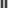
Da sole, le immagini orizzontali e verticali non riescono a rappresentare il tipo di immagini che usiamo solitamente. Abbiamo bisogno di altre immagini che otteniamo moltiplicando le prime due.

Per un immagine 8x8, Queste sono tutte le immagini di cui abbiamo bisogno.


 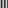
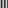
 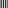
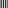

 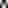
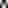
 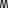
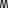

 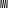
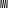


 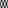
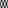


 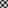
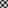
 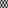
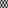


 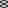
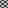
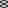
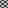
 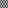
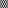
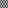
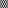
 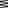
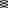
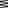
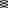

 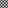
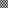
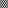
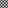
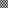
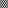


Se prendiamo le immagini, aggiustiamo il loro contrasto, e le sommiamo possiamo ottenere qualsiasi immagine.
Iniziamo con questa lettera 'A'. E' abbastanza piccola, ma abbiamo bisogno che lo sia altrimenti avremo bisogno di troppe immagini per riprodurla.

Man mano che aggiungiamo sempre più di queste immagini, otteniamo qualcosa che sia avvicina sempre di più all'immagine originale. Ma credo che intuirai lo schema qui, dato che otteniamo una buona approssimazione con solo poche immagini.


Per vere immagini JPEG ci sono un po' di dettagli extra.
l'immagine viene divisa in blocchi 8x8, e ogni blocco viene diviso separatamente. Usiamo un insieme di frequenze per determinare quanto chiaro o scuro è ogni pixel, e altri due insiemi di frequenze per il colore, uno per i rossi-verdi, l'altro per i blu-gialli. Il numero di frequenze che usiamo per ogni bloco determina la qualità dell'immagine JPEG.
Questa è una vera immagine JPEG, ingrandita in modo da vedere i dettagli. Quando giochiamo con i livelli di qualità possiamo vedere avvenire questo processo.

Conclusione
Ricapitolando:
- Le trasformate di Fourier ci permettono di prendere qualcosa e dividerla nelle sue frequenze.
- Le frequenze ci danno informazioni su proprietà fondamentali che hanno i nostri dati.
- Possiamo anche comprimere dati salvando solo le frequenze più importanti.
- E possiamo anche usarle per creare belle animazioni e un mucchio di cerchi.
Abbiamo visto solo la punta dell'iceberg. La trasformata di Fourier è uno strumento estremamente potente, perchè dividere cose nelle loro frequenze è fondamentale in diversi campi, come progettazione dei circuiti, segnali telefonici, risonanza magnetica (RM), e fisica quantistica!
Domande per i curiosi
Ho tralasciato la maggior parte della matematica, ma se sei interessato sui principi base di come funziona, ecco alcune domande che puoi usare per guidare la tua ricerca:
- Come rappresenti matematicamente la trasformata di Fourier?
- Qual è la differenza tra trasformata di Fourier a tempo discreto e trasformata di Fourier a tempo continuo?
- Come calcoli computazionalmente la trasformata di Fourier?
- Come fai una trasformata di Fourier di un'intera canzone? (Invece che di una singola nota.)
Altre 'letture'
Per saperne di più, ci sono alcune ottime risorse a cui puoi dare un'occhiata:
An Interactive Guide To The Fourier Transform Un ottimo articolo che scava più a fondo nella matematica di cosa succede.
But what is the Fourier Transform? A visual introduction. Un fantastico video di 3Blue1Brown, che spiega anche la matematica dietro le trasformate di Fourier da una prospettiva audio.
A Tale of Math & Art: Creating the Fourier Series Harmonic Circles Visualization Un altro articolo che ti spiega come puoi usare epicicli per disegnare un percorso, spiegato con l'algebra lineare.
Fourier transform (Wikipedia) E ovviamente, anche l'articolo Wikipedia è fatto bene.
L'autore
Sono Jez! Lavoro a tempo pieno in una società di ricerca nella Bay Area, e nel mio tempo libero mi piace creare giochi e codici interattivi come questo!
Questa pagina web è open-source, puoi dare un'occhiata al codice su GitHub! Se hai dei suggerimenti o vuoi fare qualsiasi domanda, sentiti libero di inviarmi un'email a fourier [at] jezzamon [dot] com, o inviami un tweet su Twitter.
Se vuoi vedere altri miei lavori, dai un'occhiata alla mia homepage, e se vuoi sapere quale sarà il mio prossimo progetto, puoi seguire il mio account Twitter, @jezzamonn!